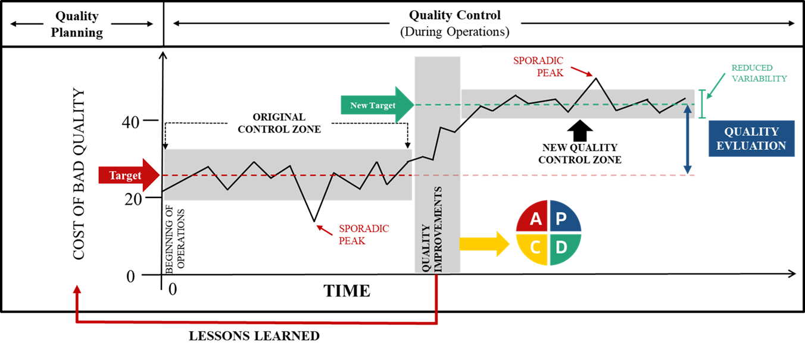

| Passos | O Mapa de Juran (Teoria Clássica) | A Modelagem Analítica (ARM - Cap 2) |
|---|---|---|
| 1 e 2 | Identificar os clientes (internos/externos) e determinar suas necessidades reais. | Levantamento exploratório das variáveis (Abordagem Bottom-up ou Top-down). |
| 3 | Traduzir as necessidades para a linguagem técnica da empresa. | Consolidação das variáveis soltas ($V_i$) em grandes Dimensões de Gestão ($D_j$). |
| 4 e 5 | Desenvolver o produto e otimizar suas características. | Cálculo do ARM, utilizando matrizes (ex: Mudge) para calibrar os pesos ($W_i$). |
| 6 e 7 | Desenvolver o processo capaz de produzir as características e otimizá-lo. | Parametrização do Desempenho ($S_i$) através de Funções de Valor e Metas SMART. |
| 8 e 9 | Provar a capacidade do processo e transferi-lo para a Operação (Controle). | Produção (Conformação) e início da Zona de Controle da Qualidade operacional. |
3 Gestão da Qualidade e o Método
4 Gestão da Qualidade e o Método
A busca pela excelência operacional na mineração exige métodos estruturados que permitam medir a discrepância entre o planejamento (target) e o desempenho real. Este capítulo aborda as bases da Gestão da Qualidade, conectando a teoria clássica de Juran às ferramentas de melhoria contínua aplicadas ao Mining Analytics.
4.1 O Motor da Gestão: A Trilogia de Juran
A gestão focada na qualidade dos processos é sustentada por três pilares fundamentais conhecidos como a Trilogia de Juran. Esta metodologia fornece o mapa para a transição entre a estabilidade operacional e o salto de performance.
A Figura 4.1 ilustra a dinâmica entre os três processos:
- Planejamento da Qualidade: Fase associada à definição do custo da baixa qualidade e ao estabelecimento de limites alvo e especificações técnicas.
- Controle da Qualidade: Durante a operação, a “Zona Original de Controle” monitora desvios e picos esporádicos. No Mining Analytics, esta fase é onde a telemetria e os pacotes de R atuam para identificar variações fora do padrão.
- Melhoria da Qualidade: Acionada pelo diagnóstico de problemas via ferramentas baseadas no ciclo PDCA. Quando as ações resultam em melhorias eficazes — como a redução da variabilidade ou o aprimoramento de indicadores — ocorre a padronização e a definição de um novo patamar de controle (New Target).

A avaliação final da qualidade visa medir o alinhamento desses indicadores com os objetivos estratégicos da organização mineira.
Dica💡 INSIGHT OPERACIONAL
Na prática da mineração, o “Pico Esporádico” de Juran pode ser a quebra inesperada da frota de caminhões fora de estrada em um dia de chuva, reduzindo a massa transportada. O Controle detecta a falha, mas é a fase de Melhoria (via PDCA) que vai investigar se o problema foi drenagem da pista, falha mecânica ou erro de operação.
4.1.1 O Paralelo: O Mapa de Juran e a Modelagem Analítica
Embora a Trilogia de Juran tenha sido formulada no século XX, seu roteiro original de “Planejamento da Qualidade” (composto por 9 passos) continua sendo o alicerce da engenharia de processos. A grande diferença contemporânea é a capacidade de quantificar matematicamente etapas que antes eram apenas conceituais.
No Capítulo 2 desta obra, detalhamos a Modelagem Analítica de Requisitos (ARM). Aquela estrutura matemática é, na prática, a execução rigorosa e moderna dos passos clássicos de Juran.
A Tabela 4.1 demonstra como a teoria de Juran se conecta com as ferramentas de modelagem que construímos anteriormente:
Essa correlação evidencia que o “Planejamento” termina quando o Passo 9 é atingido e a equipe de engenharia entrega a equação do ARM parametrizada para o chão de fábrica executar. Neste momento, o processo entra na Zona de Controle.
É apenas quando a Qualidade de Conformação falha e o controle detecta um “Pico Esporádico” que a organização é forçada a acionar a terceira perna da trilogia: a Melhoria da Qualidade, operada por meio do ciclo PDCA.
4.2 O Caminho da Solução: PDCA e MASP
O ciclo PDCA, como uma metodologia para melhoria, é uma ferramenta simples que promove alterações graduais no processo, impulsionando assim o desenvolvimento da empresa. O ciclo, conforme apresentado na Figura 4.2, é dividido em etapas de planejamento (PLAN), execução (DO), verificação (CHECK) e ação (ACT).

Nota📌 DEFINIÇÃO NORMATIVA
De acordo com Mendes (2007), o ciclo PDCA é um método estruturado para a melhoria contínua dos processos nas organizações, dividido nas seguintes etapas:
- PLAN (Planejar): Definir a situação atual, estabelecer metas mensuráveis e estratégias para alcançá-las.
- DO (Executar): Iniciar o processo, educar/treinar os envolvidos e implementar as estratégias definidas.
- CHECK (Verificar): Analisar e comparar os resultados obtidos contra os padrões esperados (metas).
- ACT (Agir/Padronizar): Tomar ações corretivas ou padronizar a melhoria com base na verificação dos resultados.
Para que essas etapas sejam realizadas com eficácia, é essencial que as subetapas sejam definidas com precisão. É importante destacar que a etapa de planejamento (PLAN) exige o maior rigor e dedicação de tempo do projeto. A identificação e priorização das métricas proporcionarão uma investigação aprofundada das causas dos problemas, embasando as propostas de mudança em métodos estruturados.
Aviso⚠️ ARMADILHA DE ENGENHARIA
O erro mais comum em projetos de melhoria é a “Miopia de Ação”: a equipe pular a fase de Planejamento (P) e ir direto para a Execução (D). Implementar soluções baseadas em “achismos” e não em dados estratificados consome recursos financeiros da empresa e, na esmagadora maioria das vezes, ataca apenas o sintoma, permitindo que a falha real retorne no mês seguinte.
4.3 Fases e Atividades do Ciclo PDCA (MASP)
A tabela a seguir consolida a estrutura metodológica e o cronograma do projeto, servindo como a principal ferramenta de controle e auditoria das etapas — o Método de Análise e Solução de Problemas (MASP). A coluna Status é destinada ao acompanhamento qualitativo da evolução das tarefas.
| Fases | Etapas | Atividades |
|---|---|---|
| P | Identificação do problema | Identificação das prioridades |
| Estabelecimento da meta do projeto | ||
| Quantificação dos ganhos do projeto | ||
| Análise do Fenômeno | Estratificação do problema | |
| Estudo das variações | ||
| Definição das metas específicas | ||
| Análise do Processo | Levantamento das causas potenciais | |
| Priorização das causas potenciais | ||
| Quantificação das causas priorizadas | ||
| Estabelecimento do Plano de Ação | Levantamento das possíveis soluções | |
| Priorização das possíveis soluções | ||
| Realização de teste piloto (se necessário) | ||
| Estabelecimento do plano de ação | ||
| D | Execução do Plano de Ação | Comunicação do plano de ação |
| Realização de treinamentos dos envolvidos | ||
| Implantação e acompanhamento do plano de ação | ||
| C | Verificação dos Resultados | Verificação do alcance da meta geral e das metas específicas |
| Quantificação dos ganhos do projeto | ||
| A | Padronização | Padronização das novas atividades |
| Implantação de plano para monitoramento do processo | ||
| Implantação de plano de ações corretivas |
4.3.1 Análise do Fluxo Metodológico
Conforme observado na tabela executiva, o ciclo inicia-se na Identificação do Problema, onde a definição das prioridades e a meta global servem de base para as atividades seguintes. Na Análise do Fenômeno, ocorre a estratificação dos dados e o estudo das variações, permitindo que a pesquisa tome forma sobre os principais KPIs a serem utilizados.
Importante🛠️ LABORATÓRIO DE ENGENHARIA: Fase 1 (Identificação do Problema)
Mão na massa: Chegou a hora de iniciar o seu projeto aplicado. Para esta etapa, crie um documento contendo:
- Termo de Abertura (TAP): Nome do projeto, justificativa (por que este problema afeta a operação?), objetivos SMART e restrições.
- Matriz de Responsabilidades (RACI): Quem executa, aprova, é consultado e informado.
- Definição do Gap: Construa um comparativo gráfico entre o Indicador Real x Planejado. O “problema” do seu projeto será a diferença métrica entre esses dois valores.
4.3.2 O Mapeamento de Fronteiras: O Sistema de Produção e a Matriz SIPOC
Antes de mergulhar nas causas de um problema usando o Pareto ou o Ishikawa, a equipe de engenharia precisa garantir que todos compreendam o fluxo macro do processo e as suas fronteiras. O maior erro de um projeto de melhoria é a equipe não saber onde o processo começa e onde ele termina, correndo o risco de tentar “abraçar o mundo”.
Para delimitar esse escopo, utilizamos a visão clássica do Sistema de Produção. Conforme ilustrado na Figura 4.3, todo processo é um conjunto de atividades estruturadas que recebem entradas, aplicam uma metodologia de transformação utilizando recursos (pessoas, instalações, tecnologia) e geram saídas (produtos ou serviços), interagindo o tempo todo com variáveis ambientais e de segurança.

No método MASP, essa visão estrutural é operacionalizada pela ferramenta SIPOC, um acrônimo que padroniza o mapeamento de qualquer processo na operação mineral:
- S (Supplier / Fornecedor): Quem fornece os insumos ou informações para o processo iniciar? (Ex: Equipe de Topografia e Planejamento de Mina).
- I (Input / Entrada): Quais são os “Recursos a serem transformados” fornecidos? (Ex: Malha de perfuração e plano de fogo).
- P (Process / Processo): Quais são as macroatividades da “Metodologia de Processamento” (limitado a 5 ou 6 passos)? (Ex: Posicionar perfuratriz \(\rightarrow\) Furar \(\rightarrow\) Carregar explosivo \(\rightarrow\) Detonar).
- O (Output / Saída): O que o processo efetivamente gera na “Saída”? (Ex: Minério desmontado com granulometria específica).
- C (Customer / Cliente): Quem recebe essa saída? (Ex: Equipe de Carregamento / Operadores de Escavadeira).
Nota💡 INSIGHT OPERACIONAL
Na mineração, construir o SIPOC resolve 50% dos conflitos entre departamentos durante a fase de planejamento de um projeto. Ele deixa claro visualmente que se a Topografia (Supplier) entregar uma malha inadequada (Input), a detonação (Process) vai gerar matacões (Output), prejudicando a produtividade da escavadeira (Customer). O SIPOC define a responsabilidade de ponta a ponta e blinda as fronteiras do seu Termo de Abertura (TAP).
4.3.3 Análise do Processo: Ishikawa, 5 Porquês e Matriz GUT
Uma vez que o Gráfico de Pareto indicou onde o problema está concentrado, a fase passa para a Análise do Processo, que visa responder por que o problema ocorre.
A ferramenta primária é o Diagrama de Ishikawa (também conhecido como Diagrama de Espinha de Peixe ou Causa e Efeito). Ele organiza o Brainstorming da equipe classificando as possíveis origens do problema em seis categorias clássicas (os 6M):
- Máquina: Falhas no equipamento ou manutenção inadequada.
- Material: Insumos fora de especificação ou peças de má qualidade.
- Mão de Obra: Falta de treinamento, desatenção ou fadiga do operador.
- Método: Procedimentos operacionais (POPs) falhos ou inexistentes.
- Medida: Erros de calibração em sensores ou indicadores mal calculados.
- Meio Ambiente: Condições externas (chuva na mina, poeira, temperatura).
Dica💡 INSIGHT OPERACIONAL
Um erro comum é preencher o Ishikawa com “Falta de…” (ex: falta de treinamento, falta de peça). A falta de algo é uma solução ausente, não uma causa. A equipe deve descrever a anomalia real (ex: “Treinamento desatualizado para o modelo 793D” ou “Peça sofreu desgaste abrasivo prematuro”).
Com o diagrama preenchido, a equipe utiliza a Matriz GUT (Gravidade, Urgência e Tendência) para pontuar as causas e priorizar qual braço do diagrama será atacado primeiro.
Finalmente, para a causa vencedora da matriz GUT, aplica-se a técnica dos 5 Porquês. A equipe deve perguntar o motivo do problema sucessivas vezes até ultrapassar os sintomas superficiais e atingir a verdadeira causa raiz (a anomalia sistêmica que, se removida, impede que o problema volte a acontecer).
Importante🛠️ LABORATÓRIO DE ENGENHARIA: Fase 3 (Análise do Processo)
Mão na massa: (Tarefa 06) 1. Ishikawa (6M): Reúna sua equipe e faça um Brainstorming para mapear as possíveis causas do problema que venceu no seu Gráfico de Pareto. 2. Priorização (GUT): Utilize a Matriz GUT para decidir, de forma técnica e fria, quais causas mapeadas no Ishikawa serão efetivamente atacadas. 3. Os 5 Porquês: Aplique a técnica para a causa prioritária. Garanta que o plano de ação não foque em sintomas, mas sim na origem do problema.
4.4 O Chão de Fábrica e Ativos
Nenhuma equação de qualidade ou modelagem estatística se sustenta na prática sem os dois pilares físicos e fundamentais da operação industrial: as pessoas e as máquinas. O Passo 10 da nossa trilha de excelência garante que, uma vez que o método de solução de problemas (MASP) tenha sido desenhado na engenharia, ele seja executado com precisão e sustentado pelas engrenagens de campo.
4.4.1 O Engajamento Humano: Círculos de Controle da Qualidade (CCQ)
Historicamente, a mineração possuía uma gestão rigidamente vertical (comando e controle), onde a engenharia pensava e a operação apenas executava. O moderno Mining Analytics prova que essa barreira é disfuncional. Quem conhece a verdadeira “dor” do processo e os pequenos desvios não reportados não é o analista sentado no escritório, mas o operador dentro da cabine da escavadeira.
Para transformar essa experiência empírica em dados técnicos, a Gestão da Qualidade utiliza os Círculos de Controle da Qualidade (CCQ).
O CCQ é um grupo voluntário de trabalhadores da mesma área que se reúne regularmente para identificar, analisar e solucionar problemas que afetam seus processos ou a qualidade do produto. A grande força dessa ferramenta é a inversão da abordagem hierárquica: a melhoria nasce de baixo para cima (Bottom-up).
4.4.1.1 Benefícios Diretos do CCQ na Mineração:
- Detecção Precoce: Os operadores costumam perceber mudanças sutis de som, vibração ou temperatura nos equipamentos semanas antes de um sensor emitir um alarme catastrófico.
- Soluções de Baixo Custo: Por estarem na linha de frente, as soluções propostas pelos círculos tendem a ser adaptações mecânicas criativas e baratas, em oposição às reestruturações milionárias propostas pelas diretorias.
- Mudança de Cultura: O colaborador deixa de ser um “apertador de botão” e passa a ser o dono do seu processo (sentimento de pertencimento e valorização).
Importante🛠️ LABORATÓRIO DE ENGENHARIA: Dinâmica do CCQ
Como estruturar um Círculo: 1. Treinamento Básico: Capacite os operadores da linha de frente nas 7 Ferramentas Básicas (Pareto, Ishikawa, 5 Porquês). Eles precisam falar a mesma linguagem da engenharia. 2. Tempo Dedicado: O grupo deve ter de 1 a 2 horas semanais, durante o expediente, liberadas e pagas pela empresa para debater problemas. Reuniões de CCQ fora do horário não engajam. 3. Reconhecimento: Quando uma ideia do grupo gera redução de custo ou aumento de produção, o reconhecimento deve ser público e, de preferência, acompanhado de incentivos financeiros atrelados ao ganho.
4.4.2 A Confiabilidade Física: Gestão e Manutenção de Ativos
Se o ser humano engajado é a inteligência do chão de fábrica, o equipamento é a força bruta que garante o resultado quantitativo do MASP. A mineração é a indústria do maquinário pesado. Caminhões fora de estrada, perfuratrizes gigantescas e moinhos industriais operam em regimes de trabalho extenuantes (24 horas por dia, sujeitos a poeira, umidade e altíssimo torque).
A melhoria da qualidade na mineração é indissociável da Gestão de Manutenção. Um indicador de qualidade cai imediatamente quando a máquina entra em falha. A evolução da confiabilidade na gestão divide a manutenção em quatro grandes estratégias:
- Manutenção Corretiva (Reativa): É o modelo mais caro e perigoso. Ocorre apenas quando o equipamento quebra. Gera lucro zero, para a produção de forma não programada e oferece grandes riscos à segurança dos operadores.
- Manutenção Preventiva (Baseada no Tempo): É a manutenção estipulada pelo manual do fabricante (ex: trocar o óleo a cada 500 horas de motor). Melhora a segurança, mas muitas vezes troca-se uma peça que ainda possuía vida útil, encarecendo a operação.
- Manutenção Preditiva (Baseada na Condição): Aqui a ciência de dados e a engenharia da qualidade começam a brilhar. Ao invés de trocar a peça por tempo, a engenharia monitora os sinais vitais do equipamento (ex: termografia de painéis elétricos, análise química do óleo, sensores de vibração de rolamentos). A peça só é trocada quando o sensor prevê a falha iminente.
- Manutenção Prescritiva (Analytics/Machine Learning): O estado da arte. Utiliza Inteligência Artificial e modelos matemáticos para cruzar dados históricos de operação e desgaste. O algoritmo prescreve não apenas quando a máquina vai falhar, mas ajusta os parâmetros de operação autonomamente para esticar a vida útil (Ex: “Abaixe o limite de RPM na subida de rampa para o caminhão não fundir o motor até a próxima parada de oficina programada”).
Nota💡 INSIGHT OPERACIONAL: A Guerra entre Produção e Manutenção
Um dos maiores gargalos organizacionais da mineração é o conflito de interesses entre a área de Operação (que é cobrada para bater a meta de volume de toneladas) e a área de Manutenção (que é cobrada para parar a máquina e realizar preventivas). Sem a aplicação da Metodologia ARM para equilibrar os pesos (\(W_i\)) dessas áreas, a Operação “passa por cima” do plano de manutenção, gerando faturamento de curto prazo e destruição do equipamento a longo prazo.